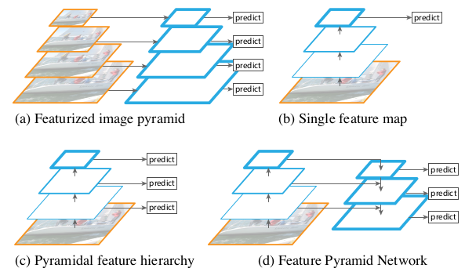
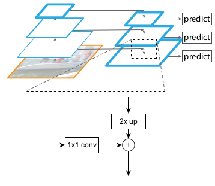
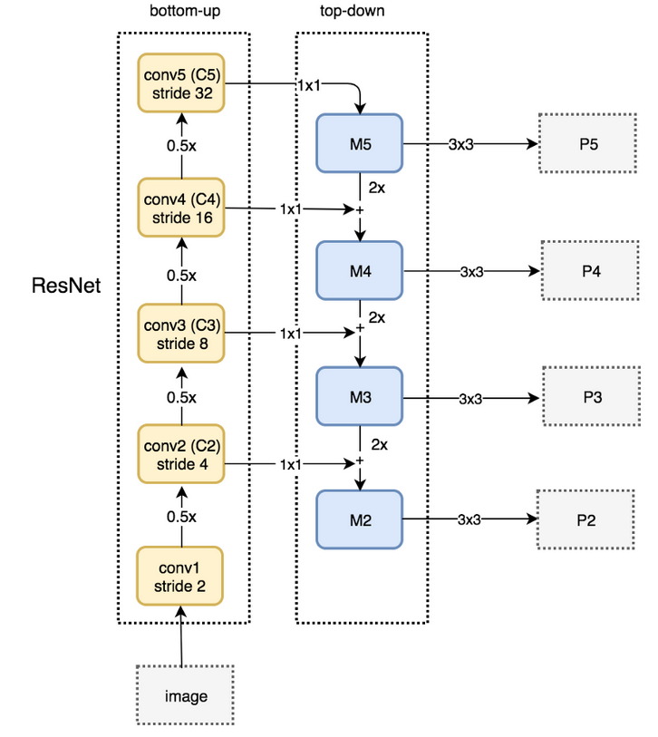

FPN¶
论文地址： Feature Pyramid Networks for Object Detection
{kind=link}
特征的利用¶

图像金字塔提取特征
如图(a)，将图片缩放到不同的尺寸，生成对应不同尺寸的特征。整个过程中每个尺寸的特征提取和预测都是独立进行的，时间成本高。
原始CNN
如图(b)，像SSP，Fast RCNN，Faster RCNN 采用这种方式，仅采用网络最后一层的特征。由于分辨率的损失，会造成检测小物体的性能急剧下降。
金字塔型特征层级
如图(c)，像SSD采用这种多尺度融合的方式，没有上采样过程，即从网络不同层抽取不同尺度的特征做预测。
特征金字塔网络¶
主网络使用ResNet，特征金字塔分成三个部分，一个自底向上的线路，一个自顶向下的线路，横向连接。

- 自底向上
自底向上的路径就是网络的前馈计算，该算法计算由不同比例特征的映射组成的特征层级，其缩放步长为2。在前向过程中，feature map的大小在经过某些层后会改变，而经过其他一些层的时候不会改变，作者将不改变feature map大小的层归为一个网络阶段，因此每次抽取的特征都是每个stage的最后一层输出，构成特征金字塔。
- 自顶向下
自顶向下的路径通过对空间上更抽象高单语义更强的高层特征图进行上采样来幻化高分辨率的特征。横向连接将上采样的结果和自底向上生成的大小相同的feature map进行逐元素相加融合。在融合之后还会再采用3*3的卷积核对每个融合结果进行卷积，消除上采样的混叠效应。
- 横向连接
采用 1*1 卷积核进行连接，减少特征图数量
网络实现¶
class FPN(nn.Module): def __init__(self, block, layers): super(FPN, self).__init__() self.inplanes = 64 self.conv1 = nn.Conv2d(3, 64, kernel_size=7, stride=2, padding=3, bias=False) self.bn1 = nn.BatchNorm2d(64) self.relu = nn.ReLU(inplace=True) self.maxpool = nn.MaxPool2d(kernel_size=3, stride=2, padding=1) # Bottom-up layers self.layer1 = self._make_layer(block, 64, layers[0]) self.layer2 = self._make_layer(block, 128, layers[1], stride=2) self.layer3 = self._make_layer(block, 256, layers[2], stride=2) self.layer4 = self._make_layer(block, 512, layers[3], stride=2) # Top layer self.toplayer = nn.Conv2d(2048, 256, kernel_size=1, stride=1, padding=0) # Reduce channels # Smooth layers self.smooth1 = nn.Conv2d(256, 256, kernel_size=3, stride=1, padding=1) self.smooth2 = nn.Conv2d(256, 256, kernel_size=3, stride=1, padding=1) self.smooth2 = nn.Conv2d(256, 256, kernel_size=3, stride=1, padding=1) # Lateral layers self.latlayer1 = nn.Conv2d(1024, 256, kernel_size=1, stride=1, padding=1) self.latlayer2 = nn.Conv2d(512, 256, kernel_size=1, stride=1, padding=1) self.latlayer2 = nn.Conv2d(256, 256, kernel_size=1, stride=1, padding=1) for m in self.modules(): if isinstance(m, nn.Conv2d): n = m.kernel_size[0] * m.kernel_size[1] * m.out_channels m.weight.data.normal_(0, math.sqrt(2. / n)) elif isinstance(m, nn.BatchNorm2d): m.weight.data.fill_(1) m.bias.data.zero_() def _make_layer(self, block, planes, blocks, stride=1): downsample = None if stride != 1 or self.inplanes != block.expansion * planes: downsample = nn.Sequential( nn.Conv2d(self.inplanes, block.expansion * planes, kernel_size=1, stride=stride, bias=False), nn.BatchNorm2d(block.expansion * planes) ) layers = [] layers.append(block(self.inplanes, planes, stride, downsample)) self.inplanes = planes * block.expansion for i in range(1, blocks): layers.append(block(self.inplanes, planes)) return nn.Sequential(*layers) def _upsample_add(self, x, y): _,_,H,W = y.size() return F.upsample(x, size=(H,W), mode='bilinear') + y def forward(self, x): # Bottom-up x = self.conv1(x) x = self.bn1(x) x = self.relu(x) c1 = self.maxpool(x) c2 = self.layer1(c1) c3 = self.layer2(c2) c4 = self.layer3(c3) c5 = self.layer4(c4) # Top-down p5 = self.toplayer(c5) p4 = self._unsample_add(p5, self.latlayer1(c4)) p3 = self._unsample_add(p4, self.latlayer2(c3)) p2 = self._unsample_add(p3, self.latlayer3(c2)) # Smooth p4 = self.smooth1(p4) p3 = self.smooth2(p3) p2 = self.smooth3(p2) return p2, p3, p4, p5
{kind=link}